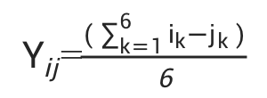

收录于合集
#国际组织 4 个
#《国际关系前沿》2022年第1期 23 个

作品简介
作者 ： Lisa Dellmuth，斯德哥尔摩大学副教授；Jan Aart Scholte，莱顿大学教授、杜伊斯堡- 埃森大学CGCR联合主任；Jonas Tallberg，斯德哥尔摩大学教授；Soetkin Verhaegen，马斯特里赫特大学助理教授。
编译 ： 吕紫烟（国政学人编译员，山东大学东北亚学院国际政治专业）
来源 ： Lisa Dellmuth, Jan Aart Scholte, Jonas Tallberg, & Soetkin Verhaegen (2021). The Elite–Citizen Gap in International Organization Legitimacy. American Political Science Review , 1-18.
归档 ： 《国际关系前沿》2022年第1期，总第40期。
内容摘要 ****
精英和公民对国际组织（IOs）的合法性认知是否存在差异，美国学者和政策制定者对此莫衷一是。本文首次比较分析了精英和公民对国际组织合法性的看法。本研究利用巴西、德国、菲律宾、俄罗斯和美国4个国家的调查证据，对6个关键国际组织合法性的态度进行了研究。在其中4个国家，所有6种不同的精英类型中，对全部6个国际组织都存在着显著的精英- 公民差距。这种差距是由精英和公民之间的系统性差异所造成的，正是这些差异影响了人们对国际组织的态度。研究结果表明，精英和普通公众之间根深蒂固的差异可能对民主和有效的国际合作构成重大挑战。
文章导读
精英和公民是否对国际组织的合法性持有不同的看法，为什么？为此，我们通过两项调查，分析了精英和公民在全球治理合法性问题上的分歧，这些调查涵盖了多个国际组织、国家和精英类型。一方面，我们在2017年至2019年进行的世界价值观调查中设置了一系列问题，衡量公民对6个主要国际组织的态度：国际刑事法院（ICC）、国际货币基金组织（IMF）、联合国（UN）、世界银行（WB）、世界卫生组织（WHO）和世界贸易组织（WTO）。另一方面，我们同时在五个不同的国家(巴西、德国、菲律宾、俄罗斯和美国)进行了一次精英调查——测量6种类型精英的态度——官僚、商人、公民社会、媒体人、政党和学者。我们使用这些数据来确定精英- 公民之间的总体差距，并解释在精英-公民二元水平上差距的变化。
理论上，我们从个人层面来解释这种差距。 该观点以个人为分析单位，从理论上解释了具有不同特征的人对国际组织合法性的看法不同的原因，并将合法性信念在精英- 公民中的差距归因于这些特征在这两类人群中的不同分布。
本研究有两个发现。 首先，精英们确实比普通大众更倾向于认为国际组织合法， 这证实了精英与公民之间存在差距。这种意见分歧在所有6个国际组织、其中4个国家以及所有6种精英类型中具有普遍性。与此同时，数据显示，在不同环境中，差距大小也不同。这表明，全球治理可能面临民主问责（democratic accountability）的问题，因为负责全球治理的精英们始终比普通公民认为国际组织更具有合法性。这一差距也凸显了当代国际合作面临的一个重大挑战——与精英相比，普通民众似乎更怀疑国际组织。这一差距进一步阐明了为什么世界各地的民粹主义政客可以利用针对国际组织的反全球主义信息。
其次，这种差距与精英和公民在个体层面的四种不同特征的分布有关。 这四种特征在不同组织和国家之间也存在差异。在几乎所有情况下，国内制度信任差异都是最关键的因素。社会经济地位和政治价值观对国际经济组织和美国尤为重要，而地理认同对俄罗斯尤为重要。这些发现表明个体层面的差异在解释精英- 公民对于国际组织合法性认知的差距方面发挥了重要作用。
01
在IO的合法性信仰上，精英和公民之间是否存在差距?
在国际组织的选择方面， 我们主要关注国际刑事法院（ICC）、国际货币基金组织（IMF）、联合国（UN）、世界银行（WB）、世界卫生组织（WHO）和世界贸易组织（WTO）。这种选择使我们能够探索不同类型国际组织中的精英- 公民差距。首先，这些国际组织分管不同的领域。其次，这些国际组织的中心体制特点各不相同。而且都是公民和精英都比较熟悉的全球性的国际组织。最后，这些国际组织都是各领域关键的管理组织。
在国家的选择方面， 我们选取了巴西、德国、菲律宾、俄罗斯和美国。这使我们能够研究不同社会条件下精英与公民之间的差距。首先，这些国家在经济发展和政治体制方面存在差异。其次，这些国家在国际组织中享有正式或非正式的特殊权力地位。同样，每个国家对这些国际组织的政策都有过具体的经历。
调查显示，精英阶层对国际组织的信心平均比公民高出30%。对于每个国际组织来说，差距也很显著，其中对联合国最大，对WTO最小。这差距并不局限于国际组织，对各国政府也存在类似的信心差距。
就不同国家来说，差距在巴西最大，在菲律宾最小，而且是负的，因为菲律宾的精英比公民更怀疑国际组织。
02
解释差距：个体层面的方法
本研究用一种个体层面的方法来解释国际组织合法性信念中的精英- 公民差距。精英和普通公众是由不同个体组成的，他们的特点影响着其对国际组织的态度，由此产生了关于国际组织合法性信念的差距。具体来说，我们将四种类型的个体特征理论化： 社会经济地位、政治价值观、地理认同和国内制度信任。
假设1：精英比公民的社会经济地位越高，对国际组织合法性的信念就越强。
假设2：精英比公民持有的左翼或者绿色自由主义的政治价值观越多，对国际组织合法性的信念就越强。
假设3：精英比公民拥有的全球身份越多，对国际组织合法性的信念就越强。
假设4：精英比公民对国内政治机构的信任度越高，对国际组织合法性的信念就越强。
03
实证分析
本研究使用了一种二元模型，即每个被调查的精英与该国所有被调查的公民相匹配。因此，分析涉及精英与公民的对立关系，而非个体本身。分析测试了这些精英与公民之间在社会经济地位、政治价值观、地理认同和国内机构信任方面的差异，在多大程度上与他们对国际组织信任度的差异有关。
在每一对二元结构中， 因变量 ——信任缺口等于一个精英对国际组织的信任度（i）减去一个公民对该国际组织的信任度（j）。所有6个国际组织（k）在精英和公民心中的合法性信念差距的平均值计算如下：

自变量 分别是精英与公民在社会经济地位、政治价值观、地域认同和对国内机构的信任度方面的差异。精英与公民之间的这些差异与合法性信念差异的计算方法相同，即从每个精英的得分中减去每个公民的得分。
社会经济地位（Socioeconomic Status）。 首先，我们以0到8分来衡量受访者的教育水平。其次，我们使用1（完全不满意）至10（完全满意）的指标，估算精英和公民对其家庭财务状况的满意度。
政治价值观（Political Values）。 首先，我们将使用1（最左）至10（最右）来测算受访者对自己政治价值观的定位。其次，我们基于几个调查项目构建了两个衡量标准，挖掘受访者在GAL- TAN量表上的价值观。这些项目包括受访者对个人道德、移民以及维持社会秩序的相对重要性的态度。根据这些问题，我们创建了一个区分gal(=1)和tan(=0)位置的复合变量。
地理认同（Geographical Identification）。 调查询问了受访者与世界和国家的亲密程度，从0（一点也不接近）到3（非常接近）不等。
对国内机构的信任度（Domestic Institutional Trust）。 第一个指标衡量对国家政府的信心。评分范围从0（根本没有）到3（很信任）。总体而言，精英阶层对国家政府的信心高于普通公民。第二个指标衡量对国家政治制度的满意度，从1分（一点也不满意）到10分（完全满意）。精英阶层对国家政治制度的满意度略低于普通公民。最后，我们控制年龄和性别。
这些发现得出了两个的结论。 第一， 个体层面的差异与精英和公民对社会责任合法性的信念差异有关。 第二， 当我们研究特定的国际组织和国家时，一般的解释模式变得更加微妙。这表明，组织和社会层面的环境塑造了个人层面的驱动因素在特定环境中发挥的作用。
04
结果
结果发现，个体层面的四种解释都有明确的数据支持。与此同时，针对特定国际组织和国家之间的差距体现了组织和社会背景的影响。
对政府的信心和社会经济地位 两个指标都具有统计上的显著性。此外，至少一个政治价值指标具有相关性。在地理认同方面，精英- 公民对全球依恋的差异对其中五个国际组织起作用，而国家依恋只对联合国有显著影响。
在除美国以外的所有国家中，精英-公民对 政府信心 的差距以及他们对国际组织合法性信念的差距之间存在积极的、具有统计学意义的显著关联。这符合国内机构信任的解释。
同样，在四个国家中， 社会经济地位 指标存在积极的、具有统计学意义的显著关联，只有俄罗斯例外。在俄罗斯和美国，精英和公民在地理认同上的差异似乎很重要，但在巴西、德国或菲律宾则不然。政治价值观在美国影响较大，在巴西和俄罗斯证据不一，而在德国和菲律宾则影响很小。
当在特定国家中考察特定的国际组织时， 社会经济地位 变得更加重要。在美国，社会经济地位始终与精英- 公民之间对于国际组织合法性信念的差距有关，但在巴西、德国和菲律宾，影响则较为模糊，在俄罗斯则显得无关紧要。从这一分类分析中还可以明显看出，社会经济地位对于经济类国际组织比人类安全类国际组织更重要。这一结果可能反映了经济类国际组织的分配结果——相对于普通公民，它们通常更偏向于精英。
在所有国家中， 政治价值观 的影响都很显著，但其重要性的大小也因环境而异。国家背景显著塑造了政治价值观对组织合法性信念的影响。
最后，在俄罗斯和美国， 地理认同 的差异与精英- 公民对国际组织合法性的认知也呈相关性，在巴西和德国则很少有关联。而在菲律宾，要么没有关联，要么是负相关。只有俄罗斯的精英比民众对国际组织的信心更低。这一结果可能反映了俄罗斯精英对受“西方主导”的国际组织的威胁特别敏感。
总之，上述发现得出了两个广泛的结论。 首先， 个体层面因素的差异与精英-公民对国际组织的合法性信念之间的差距有系统性的联系。 其次， 当我们研究特定的国际组织和国家时，组织和社会层面的环境影响了个体层面的因素在特定环境中所发挥的作用。
05
结论
该研究有四个更广泛的意义。 首先，研究表明全球治理可能面临民主问责制的问题。 一个政治制度的民主可信度，在一定程度上可通过执政者与被执政者之间的意见接近程度来判断。调查结果表明，掌管全球治理的精英们始终比普通公民认为国际组织更具合法性。这种差距是否会真的造成民主问责制问题，取决于精英阶层是否调整其政策立场以迎合公民的观点。
第二，研究突出了当代国际合作中的一个重大挑战。 政府间合作一定程度上受制于国内支持。然而，研究显示公民对国际组织的怀疑程度普遍高于精英阶层，这让人们对精英驱动国际合作的可行性产生了疑问。
第三，研究阐明了为何世界各地的民粹主义政客利用反全球主义信息来攻击国际组织。 研究表明民粹主义政客认为瞄准由“脱离现实”的精英所控制的国际组织系统是有利可图的。此外，这种潜力是如何根植于精英和公民各种因素之间的差异。那些希望扭转民粹主义潮流的人需要认识到并减少这些分歧。
最后，研究结果强调了比较设计的重要性。 首先，精英与公民在合法性信念上的差距是多种驱动因素共同作用的结果。其次，这些因素的相对强度在一定程度上因国家和地区而异。
译者评述
本文用实证方法解决了两个问题：首先，精英- 公民对国际组织合法性的认可存在差距，具体差距的大小根据特定的国家和特定的国际组织也有所差异。其次，这种差距可以通过个人层面的因素来解释，即社会经济地位、政治价值观、地理认同和对国内机构的信任度。
本文提出的研究问题是当前学界较少关注的，具有一定的创新性。研究对象的选取也兼顾了各种不同的情况，能够一定程度上保证研究的客观性和结论的普遍性。在研究方法上，本文遵循了标准的实证研究方法，由此得出的结论具有较强说服力。
但同时，我们也应该注意到这项研究的局限性，以及未来该如何解决这些问题。一方面，这两项调查均设定在一个特定的时间点，因此下一步可以评估上述发现是否只能限定在特定的时间条件。此外，还可以通过将研究范围扩大到更多的国家和国际组织来评估上述发现是否具有普遍性。最后，未来研究还可以探索在个人层面或组织和社会层面还有那些其他造成差距的驱动因素。
词汇整理
民主问责 democratic accountability
地理认同 geographical identification
社会经济地位 socioeconomic status
政治价值观 political values
审校 | 刘培晨 杨沛鑫
排版 | 柴昕彤 黄伊蕾
文章观点不代表本平台观点，本平台评译分享的文章均出于专业学习之用, 不以任何盈利为目的，内容主要呈现对原文的介绍，原文内容请通过各高校购买的数据库自行下载。

国政学人
支持学术公益与知识传播
微信扫一扫赞赏作者 __赞赏
已喜欢，对作者说句悄悄话
取消 __
发送给作者
发送
最多40字，当前共字
上一页 1/3 下一页
长按二维码向我转账
支持学术公益与知识传播
受苹果公司新规定影响，微信 iOS 版的赞赏功能被关闭，可通过二维码转账支持公众号。